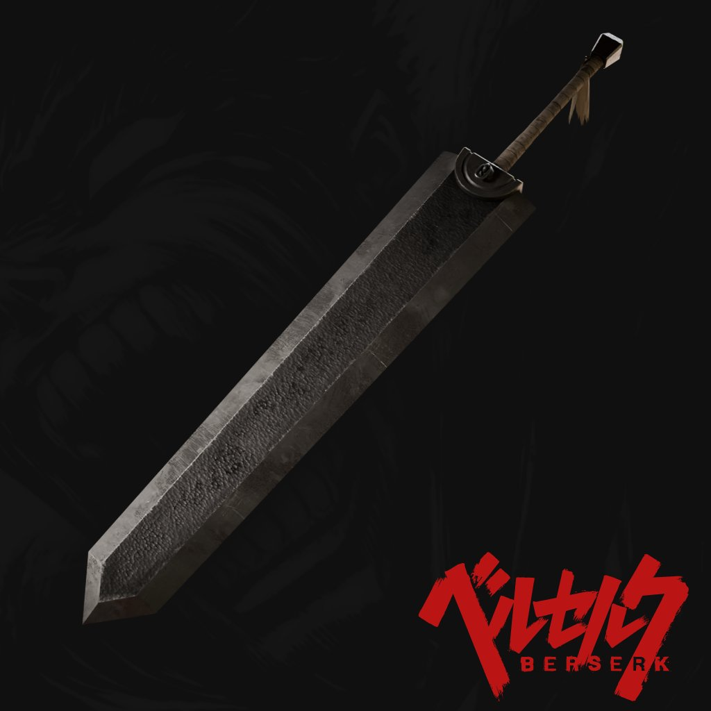
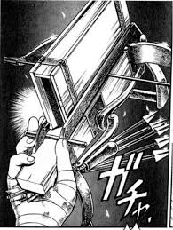
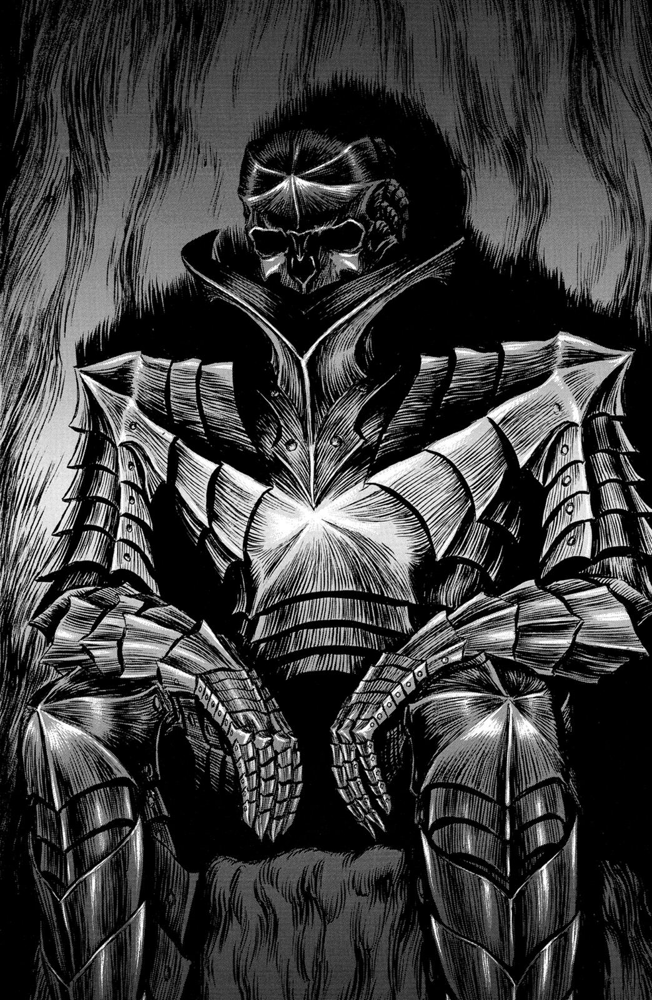
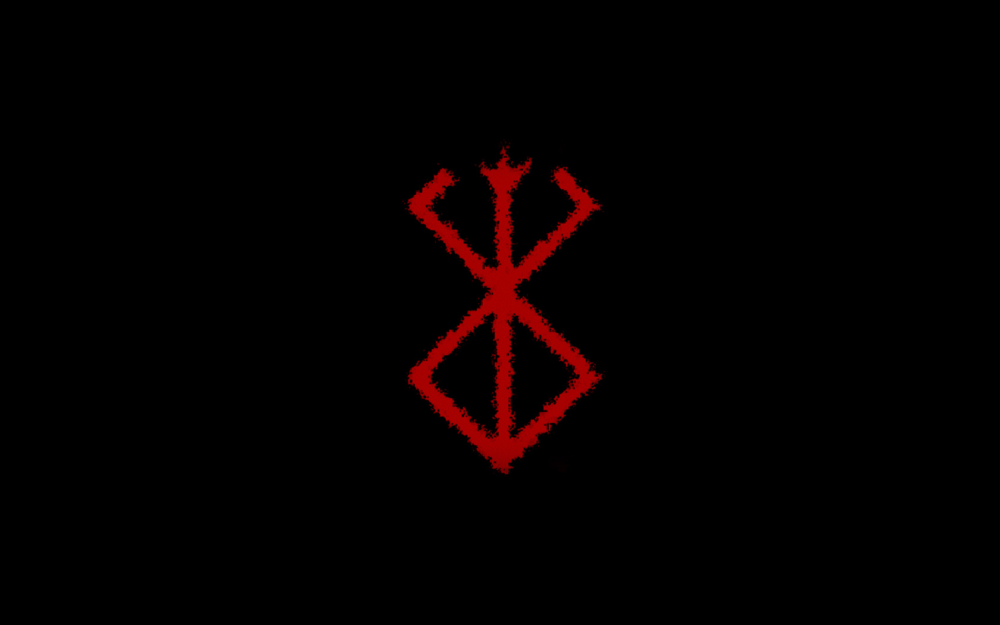

Guts (Gattsu)
Guts, known as the Black Swordsman, is a relentless fighter shaped by a cruel world. Haunted by demons both within and without, he stands as a symbol of raw strength, survival, and unyielding resolve.
Guts, known as the Black Swordsman, is a relentless fighter shaped by a cruel world. Haunted by demons both within and without, he stands as a symbol of raw strength, survival, and unyielding resolve.
Guts wields the legendary Dragonslayer — a massive slab of iron that defies the definition of a sword. Forged not for elegance but for destruction, it crushes and cleaves through monsters, apostles, and men alike. Its sheer size and weight are tamed only by Guts' unmatched strength and rage.
Attached to his prosthetic left arm, Guts' cannon delivers explosive blows at close range, perfect for brutal counters in the heat of battle. Above it, a compact auto-reloading crossbow allows for rapid long-range attacks, giving him deadly versatility on the battlefield.
The Berserker Armor pushes Guts beyond human limits, amplifying his strength and speed while numbing his pain. But its power comes at a cost — it devours his sanity and ignores his wounds, turning him into a force of pure instinct and fury. It is both his weapon and his curse.
Etched into Guts’ neck, the Brand of Sacrifice marks him as prey for demons, apostles, and restless spirits.It bleeds in the presence of evil, serving as a cruel beacon that draws horrors to him.This cursed sigil ties him eternally to the astral world and his tragic fate.
